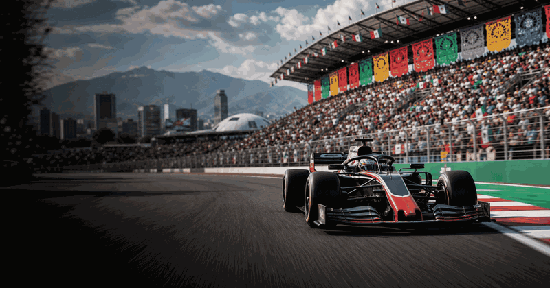
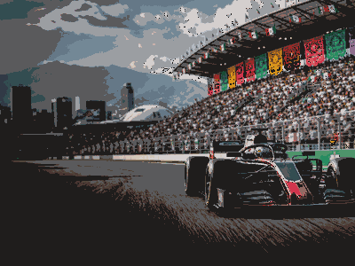

Mexico City Grand Prix
First race1963
CircuitHermanos Rodríguez
Top 4 race winners
1 NetherlandsMax VerstappenMexico City GP wins20172018202120222023
NetherlandsMax VerstappenMexico City GP wins20172018202120222023
5
2 United KingdomJim ClarkMexico City GP wins196219631967
United KingdomJim ClarkMexico City GP wins196219631967
3
3United KingdomLewis HamiltonMexico City GP wins20162019
2
4 FranceAlain ProstMexico City GP wins19881990
FranceAlain ProstMexico City GP wins19881990
2

More Formula 1Formula 1 topicMore races, circuits and calendar moments.